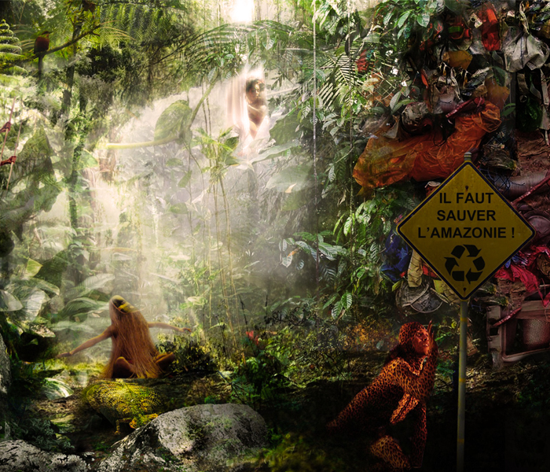
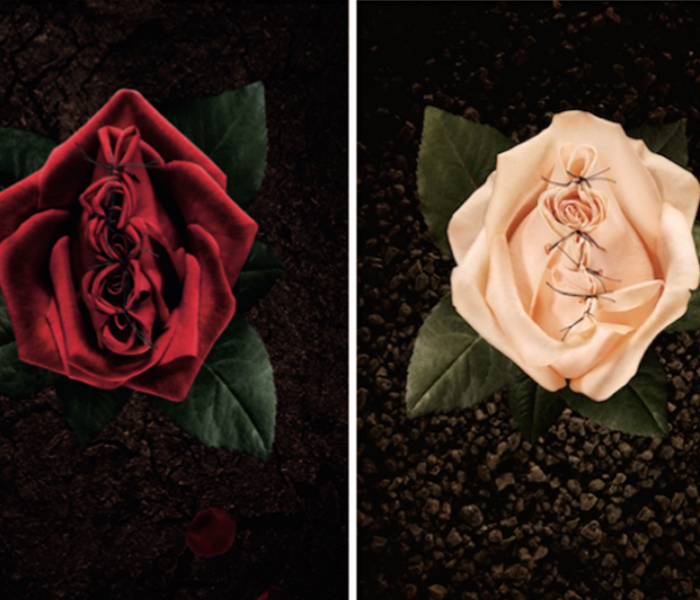
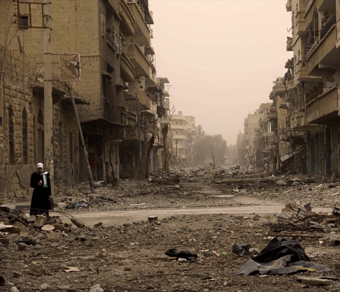
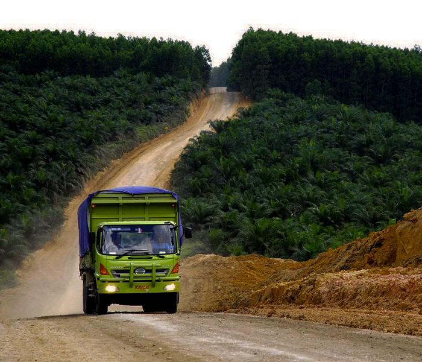

Aïda-Marie Sall
La libération du cheveu afro (1/2)
Loin d’être un sujet superficiel, le cheveu afro est un symbole.
Retour sur les transformations des normes capillaires qui en disent long sur les sociétés et leur temps.
Abonne-toi !
Lisa
Mimoun
Au-delà des mythes : les mille visages de l’Amazonie
Brandie bien malgré elle comme un symbole de virginité et d’abondance, l’Amazonie a même été affublée de la lourde responsabilité de “poumon de la planète”.
A l’approche du grand sommet sur le climat, la COP 21, une petite mise au point s’impose sur la plus grande forêt tropicale du monde.
Abonne-toi !

Gri
Le petit bout sous la lame
L'excision c'est tabou, on en viendra tous à bout ?
Combattre les mutilations génitales c'est bien, mais
encore faut-il connaître son adversaire.
Voici la face méconnue de l’excision.
Abonne-toi !

Etienne
Richer
Le bébé parfait pour demain
Aujourd'hui on peut connaître le capital génétique d'un enfant bien avant sa naissance. Et notamment s'il est porteur de l'anomalie génétique la plus fréquente : la trisomie 21.
Comment on fait ?
Et surtout, qu'est-ce qu'on en fait ?
Abonne-toi !
Nicolas Marincic
Le Moyen Orient, cette poudrière made in Occident
Non, le Moyen Orient n’est pas une terre de terroristes. Mais oui, nous avons une grande part de responsabilité dans les crises actuelles.
Et oui, il faut en parler.
Abonne-toi !

Justine
Richer
Le continent invisible
C'est un continent dont on ne parle pas à l'école.
Pas la peine de chercher, il n'est ni sur les cartes, ni sur les photos satellites.
Pourtant il est bien là, et c'est nous qui l'avons fabriqué.
Abonne-toi !
Clique ici pour voir plus d'articles...
Aïda-Marie Sall
La libération du cheveu afro (2/2)
En France, les Afro-descendantes dépensent deux à trois fois plus que les « Caucasiennes » pour leur consommation de cosmétiques capillaires.
Mais les marques ont encore du mal à s’adresser à ce marché à fort potentiel.
Abonne-toi !
Noémie Huybrechts
La Palestine ou le droit d'exister
Le conflit israélo-palestinien, on en entend beaucoup parler sans bien le comprendre. Les médias ont leur part de responsabilité, puisqu’ils ont tendance à le résumer à une guerre de religion.
En réalité, ils ne font qu’effleurer le véritable problème: la revendication par deux peuples de leur droit d’exister… sur un même territoire.
Abonne-toi !
.jpg)
Nicolas Marincic
Le terrorisme, une vieille histoire…
En 2015, la France a encaissé plusieurs attentats terroristes. Ce ne sont pourtant pas des évènements inédits.
Retour sur l’histoire de ce moyen d’action politique, toujours spectaculaire.
Abonne-toi !
Justine
Richer
L'huile de palme, ce grand démon?
C’est l’huile la plus consommée au monde. Elle a pourtant bien mauvaise réputation.
Est-elle vraiment si diabolique ?
Abonne-toi !

Noémie Huybrechts
La lutte contre l'Etat Islamique : A qui profite-t-elle au Moyen Orient (3/3)
Décryptage de la lutte contre l’Etat Islamique, miroir de la géopolitique internationale :
voir aussi “Qu’est-ce que l’Etat Islamique ?” (1/3) et “Comment les Etats-Unis légitimisent-ils leur intervention ?” (3/3).
Abonne-toi !
Clique ici pour voir plus d'articles ...
Noémie Huybrechts
La lutte contre l'Etat Islamique : Comment les Etats Unis légitimisent-ils leur action (2/3)
Décryptage de la lutte contre l’Etat Islamique, miroir de la géopolitique internationale :
voir aussi “Qu’est-ce que l’Etat Islamique ?” (1/3) et “A qui profite-t-elle au Moyen Orient ?” (3/3).
Abonne-toi !
Noémie Huybrechts
La lutte contre l'Etat Islamique : Qu'est-ce que l'Etat Islamique (1/3)
Décryptage de la lutte contre l’Etat Islamique, miroir de la géopolitique internationale :
voir aussi “Comment les Etats-Unis légitimisent-ils leur intervention ?” (2/3) et “A qui profite-t-elle au Moyen Orient ?” (3/3).
Abonne-toi !
Alexandra d'Imperio
Pourquoi les investisseurs se ruent sur les terres fertiles
Parce qu’au XXIème siècle, la terre c’est de l’or vert.
Et tout le monde veut sa part.
Abonne-toi !
Justine
Richer
Le ricin, solution contre la pauvreté à Madagascar?
Dans un article publié par Le Monde, Laetitia Van Eeckhout affirme que le ricin, plante herbacée originaire d’Afrique tropicale, peut être une arme de lutte contre la faim à Madagascar
Une affirmation qui mérite d’être nuancée…
Abonne-toi !